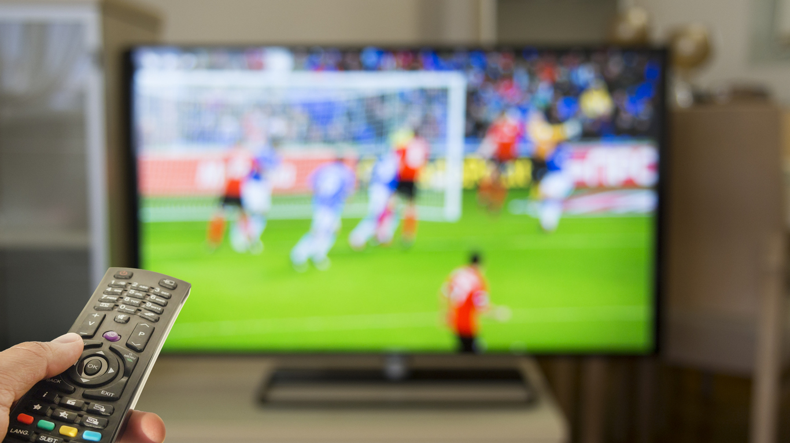

Television has brought sports into a worldy spectrum ever since it's introduction hundreds of years ago. Now, in a more technologically savvy era, streaming services have begun to take some of that burden. Considering that thousands and even millions of fans for these major sport teams are either not in town to watch their favorite teams or just can't afford to go watch them in person, these different outlets to watch them have become very prominent in today's society. 